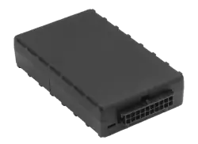
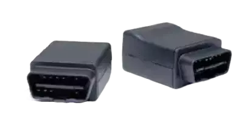

Hardwired GPS Tracker with Custom Features
State-of-the-art technology, tamper-resistant design.
State-of-the-art technology, tamper-resistant design.
Not comfortable with the OBD-II device? Need a more discrete and tamper-proof installation?
The One Step Custom Features Hardwired GPS Tracker can work with any power source—no matter the year of the vehicle, and there are multiple places in the vehicle where it can be installed.
Reduction in man-hours
Reduction in fuel costs
Reduction in number of accidents
reduction in insurance premiums
Reduction in citations
Our up-to-the-minute reports are the foundation that allows you to reduce fleet accidents, off-limits use, poor driving habits, protect company property and transform your fleet operations.
By tracking driver identification, you can monitor driver behavior, such as speeding, harsh braking, and acceleration, and ensure that they are adhering to company policies and safety regulations. This information can be used to provide feedback to drivers and improve their driving skills, which in turn can lead to reduced fuel costs, fewer accidents, and less wear and tear on your vehicles.
The starter disable feature prevents theft and unauthorized use of vehicles. Activating it during a theft prevents the thief from driving the vehicle and allows real-time tracking for quick recovery with minimal damage.
The Power Take Off (PTO) feature detects when equipment is in use and logs activity in the GPS tracking software. This allows you to monitor usage, identify patterns or trends, and prevent unauthorized use. Alerts can be set up for any unauthorized activity, allowing you to quickly identify theft or misuse and take action to prevent further loss or damage.
One Step GPS’ platform is powerful and built for you. Learn the
software rapidly on your own or with the help of our industry-leading
support. For simple applications, our software can be learned in as
little as 1 hour. In most cases, brand new users can familiarize
themselves with the software in less than a day.
Our platform places all of the information you need to transform fleet
operations, safety and success at your fingertips. See real-time
location and direction, vehicle speed, calculated odometer, engine
on/off, engine idle, engine hours, altitude, vehicle/equipment voltage
plus there are optional add-ons available.
What's the difference between hardwired trackers and plug-in trackers?
Hardwired trackers are integrated directly into the vehicle's electrical system, a process that requires a professional mechanic or someone with low-voltage experience. This permanent installation offers enhanced security as the unit is discreetly concealed, making it difficult to locate and tamper with.
Plug-in GPS trackers are designed for easy installation and removal, connecting directly to the vehicle’s OBD-II port without needing professional installation. While this design ensures flexibility and convenience, it also requires additional measures to conceal the unit, protecting it from tampering or theft. Unlike hardwired units, plug-in trackers provide detailed insights into engine performance and other diagnostic data due to their direct connection to the vehicle’s diagnostics port.
The choice between hardwired and plug-in GPS fleet trackers hinges on the balance between security and convenience. Hardwired units are suited for those seeking a more permanent and secure solution, while plug-in units cater to users who value flexibility, ease of installation, and detailed vehicle diagnostics.
What happens if someone disconnects the hardwired GPS unit?
To put it simply, you will know as soon as someone removes the device.
We offer many different ways to send alerts:
You can also send the information to as many people/users as needed to ensure your trackers will always be online.
Additionally, the tracker has a 10-hour backup battery so if the tracker is still in the vehicle when disconnected you can still track and recover the vehicle with ease. This feature also works if someone disconnects the battery and tows the vehicle."
How long does it take to install a hardwired GPS device?
Depending on the vehicle and familiarity, it takes anywhere from 15 minutes to an hour. To install the hardwired unit you need to only connect three wires. Red gets connected to a wire with constant power, Black gets connected to a ground, and White gets connected to a wire that only gets power when the vehicle is turned on.
Is it compatible with all vehicles?
Our hardwired GPS tracker is compatible with any vehicle, it just requires an understanding of low voltage electrical and how to properly install the device. If you have any questions our US-based specialist support team is available to assist you!
How accurate is the data?
Our hardwired GPS tracker delivers superior GPS accuracy, ~2.0m CEP Open Sky.
In simple terms this means that, in good weather conditions, your GPS will report vehicles within several feet of their actual physical location. Our GPS fleet trackers deliver superior accuracy so you can make confident decisions based on the data you’re receiving.
With GPS tracking updates as often as every 2-30 seconds, you can now have a complete, real-time view of every vehicle on the road.
What engine data is reported with hardwired gps?
Our hardwired GPS tracker captures valuable data that can help manage fleet fuel costs, support fleet maintenance programs and keep your drivers safe:
Can I install the GPS tracker myself, or do I need a professional?
If you have low-voltage experience and are comfortable working on your vehicles, it's definitely possible to install the hardwired GPS tracker yourself. If you have further questions on this, schedule a call with one of our US-based specialists to discuss the matter.
Can I move the tracker to another vehicle if needed?
Yes, you can remove and reinstall the hardwired GPS tracker; we have simple instructions available for moving the device from one vehicle to another.
Can I monitor driver behavior, such as speeding or harsh braking, with the tracker?
Yes! The hardwired GPS tracker provides real-time reports on driver behavior including speeding, harsh braking, accident detection, vehicle idle, engine on and off and more.
Will the installation of the tracker void my vehicle's warranty?
Installing a GPS tracker in your vehicle could potentially void the warranty, as is the case with many other aftermarket devices. Be sure to check your vehicle’s warranty to understand your rights, and ensure that your GPS device is properly installed in order to reduce the likelihood of voiding the warranty.
Why should I choose a hardwired tracking device over a plug-and-play or battery-operated unit?
The major benefit of a hardwired GPS tracker is that it's more discreet, more difficult to find and more difficult to remove or tamper with. While the other types can be hidden, if theft or tampering is a primary concern for you consider using a hardwired GPS tracker instead of a plug-in since it can be hidden virtually anywhere three feet of your electrical connection which makes it a much harder target to find.
Where should I install my tracker?
We recommend installing the GPS tracker under the dash, this is the most convenient and effective placement of the unit. We will provide you with full installation instructions and our US-based specilists will be available to help you with any questions or problems that arise in the installation process.
Hardwired trackers are integrated directly into the vehicle's electrical system, a process that requires a professional mechanic or someone with low-voltage experience. This permanent installation offers enhanced security as the unit is discreetly concealed, making it difficult to locate and tamper with.
Plug-in GPS trackers are designed for easy installation and removal, connecting directly to the vehicle’s OBD-II port without needing professional installation. While this design ensures flexibility and convenience, it also requires additional measures to conceal the unit, protecting it from tampering or theft. Unlike hardwired units, plug-in trackers provide detailed insights into engine performance and other diagnostic data due to their direct connection to the vehicle’s diagnostics port.
The choice between hardwired and plug-in GPS fleet trackers hinges on the balance between security and convenience. Hardwired units are suited for those seeking a more permanent and secure solution, while plug-in units cater to users who value flexibility, ease of installation, and detailed vehicle diagnostics.
To put it simply, you will know as soon as someone removes the device.
We offer many different ways to send alerts:
You can also send the information to as many people/users as needed to ensure your trackers will always be online.
Additionally, the tracker has a 10-hour backup battery so if the tracker is still in the vehicle when disconnected you can still track and recover the vehicle with ease. This feature also works if someone disconnects the battery and tows the vehicle."
Depending on the vehicle and familiarity, it takes anywhere from 15 minutes to an hour. To install the hardwired unit you need to only connect three wires. Red gets connected to a wire with constant power, Black gets connected to a ground, and White gets connected to a wire that only gets power when the vehicle is turned on.
Our hardwired GPS tracker is compatible with any vehicle, it just requires an understanding of low voltage electrical and how to properly install the device. If you have any questions our US-based specialist support team is available to assist you!
Our hardwired GPS tracker delivers superior GPS accuracy, ~2.0m CEP Open Sky.
In simple terms this means that, in good weather conditions, your GPS will report vehicles within several feet of their actual physical location. Our GPS fleet trackers deliver superior accuracy so you can make confident decisions based on the data you’re receiving.
With GPS tracking updates as often as every 2-30 seconds, you can now have a complete, real-time view of every vehicle on the road.
Our hardwired GPS tracker captures valuable data that can help manage fleet fuel costs, support fleet maintenance programs and keep your drivers safe:
If you have low-voltage experience and are comfortable working on your vehicles it's definitely possible to install the hardwired GPS tracker yourself. If you have further questions on this, schedule a call with one of our US-based specialists to discuss the matter.
Yes, you can remove and reinstall the hardwired GPS tracker; we have simple instructions available for moving the device from one vehicle to another.
Yes! The hardwired GPS tracker provides real-time reports on driver behavior including speeding, harsh braking, accident detection, vehicle idle, engine on and off and more.
Installing a GPS tracker in your vehicle could potentially void the warranty, as is the case with many other aftermarket devices. Be sure to check your vehicle’s warranty to understand your rights, and ensure that your GPS device is properly installed in order to reduce the likelihood of voiding the warranty.
The major benefit of a hardwired GPS tracker is that it's more discreet, more difficult to find and more difficult to remove or tamper with. While the other types can be hidden, if theft or tampering is a primary concern for you consider using a hardwired GPS tracker instead of a plug-in since it can be hidden virtually anywhere three feet of your electrical connection which makes it a much harder target to find.
We recommend installing the GPS tracker under the dash, this is the most convenient and effective placement of the unit. We will provide you with full installation instructions and our US-based specilists will be available to help you with any questions or problems that arise in the installation process.
Not sure if you need a plug-in solution or a hardwired solution?
While both options offer superior tracking and reporting capabilities,
this chart highlights the key differences so you can make the best
choice for your fleet’s needs.
|

Hardwired unit
|

Plug-in unit
|
|
|---|---|---|
| Dimensions | 3.7” x 2.0” x 0.8” | 1.88” x 2.50” x 1.14” |
| GPS accuracy | Superior accuracy, ~2.5m CEP Open Sky | Superior accuracy, ~2.5m CEP Open Sky |
| Alerts | Dozens of state-of-the-art alerts | Dozens of state-of-the-art alerts |
| Installation | Requires professional installation or low voltage experience | Easy, less than 1 minute, can be done by anyone |
| Tamper-proof | Very difficult to remove, hardwired into vehicle electrical | Easy to remove, extra cables required to hide device, automatic tamper alerts |
| Cell technology | LTE CAT-M1, GSM/GPRS, default 2-30 second update speed while on, 30 min while off | LTE CAT-M1, GSM/GPRS, default 2-30 second update speed while on, 30 min while off |
| Warranty | Lifetime warranty (Read our warranty) | Lifetime warranty (Read our warranty) |
| Battery draw | Typical 50mA @ 12V (GPS tracking and cell idle) | Typical 60 mA @ 12V (active tracking with GPS and cell enabled) |
| Operating temp. | -30° to +60° C (connected to primary power) | -30° to +60° C (connected to primary power) |
| Voltage range | 9-30 VDC (start-up, operating) | 9-30 VDC (start-up, operating) |
| Power supply | 24/7 direct from vehicle | 24/7 direct from vehicle |
| Battery backup | 12 hour backup battery life | 2 hour backup battery life |
| Accelerometer | Triple-axis, impact, motion sense | Triple-axis, impact, motion sense |
| Gyroscope | Triple-axis | Triple-axis |

 Chat with us
Chat with us